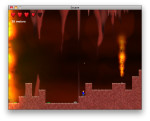

Gosu Forums (archived)
Overview
back to libgosu.org
Send corrections on GitHub
Topic
Gosu
/
Gosu Showcase
/ Escave! by Janis Born
By
jlnr
(dev)
Date
2008-11-15 00:09
Janis Born's entry for the "Random" themed Ludum Dare 48h compo in 2004. Features some very cool graphics! (He someone who was new to Gosu, and even to Ruby, kudos! :))
Download source package
Download old Windows binary
